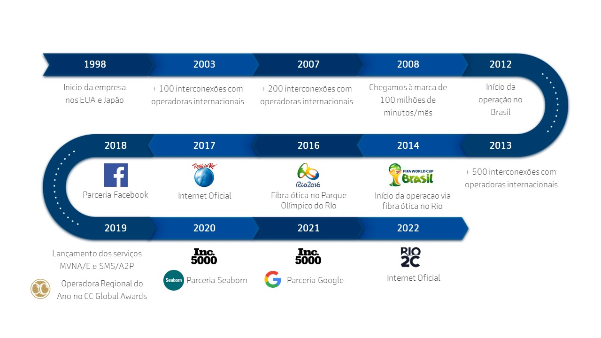

Telecall
Seja Bem Vindo(a),abaixou possui mais informações sobre nossa empresa caso tenha duvida. Sobre Nós
Seja Bem Vindo(a),abaixou possui mais informações sobre nossa empresa caso tenha duvida. Sobre Nós
Com a aquisição da licença SMP, a Telecall agora também opera serviços móveis (voz e dados), oferecendo aos clientes corporativos uma variedade de planos e comodidades de valor agregado. Além disso, Telecall opera como uma MVNE e MVNA, oferecendo seus sistemas e redes para outras empresas que estão interessadas em lançar suas próprias operações móveis para alavancar suas marcas. Com experiência acumulada de mais de 20 anos e a busca constante por inovação e tecnologia, a Telecall é hoje referência no segmento de telecomunicações e sinônimo de qualidade e eficiência. A Telecall foi fundada em 1998 e está sediada no Brasil, com escritórios em Miami, Portugal e Inglaterra.
Eleito Melhor Operador Regional do Ano na Premiação CC – Global Awards 2019 em Berlim Destaque em Infraestrutura e Soluções de Conectividade e Comunicação Unificada na Premiação da Aberimest em 2018, entregue pelo ministro de telecomunicações Gilberto Kassab e Juarez Quadros, presidente da Anatel. Destaque como Operadora em Inovações Móveis e pelas Soluções de Convergência Fixo-Móvel, Split Billing, Integração e Colaboração Empresarial da Aberimest em 2019. Duas vezes vencedor do Prêmio de Voip Hospedado entregue pela Revista Internet Telephony em 2018 pelo produto Callphone de Comunicação Unificada e Colaboração. #2517 no ranking Inc. 5000 das empresas privadas de maior crescimento acelerado nos EUA de 2020.
+ 20 anos de experiência global em soluções de comunicação
